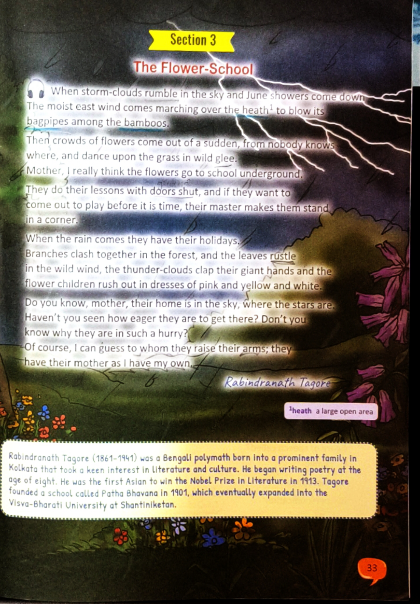
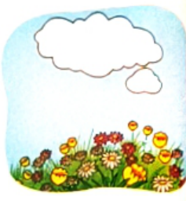
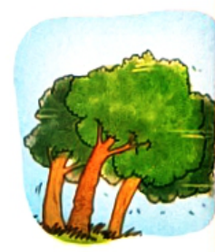

By Rabindranath Tagore (From The Crescent Moon, 1913)
10 min read
Whimsical Childhood Imagination
Monsoon Arrival
Nobel Laureate 1913

Original Textbook Illustration: Storm clouds rumbling in the sky, lightning flashing, and vibrant flower children dancing in wild glee.
Complete Text of the Poem
The Flower-School
Hover or tap any underlined word to see its contextual meaning!
When storm-clouds rumble in the sky and June showers come down,
The moist east wind comes marching over the heath to blow its bagpipes among the bamboos.
Stanza 1 Context: The arrival of the summer monsoon in June. The moist easterly wind is personified as a musician marching across open meadows, blowing music through bamboo groves.
Then crowds of flowers come out of a sudden, from nobody knows where,
and dance upon the grass in wild glee.
Mother, I really think the flowers go to school underground.
They do their lessons with doors shut,
and if they want to come out to play before it is time, their master makes them stand in a corner.
Stanza 2 Context: The young boy shares his sweet theory with his mother. He imagines that during dry weather, seeds aren't merely dormant—they are locked inside an underground classroom doing tedious schoolwork!
When the rain comes they have their holidays.
Branches clash together in the forest, and the leaves rustle in the wild wind,
the thunder-clouds clap their giant hands
and the flower children rush out in dresses of pink and yellow and white.
Stanza 3 Context: Rain is the recess bell! The entire natural world joins the party: forest branches collide like dancers, winds howl, thunderclaps sound like clapping applause, and the blossoms erupt in multi-colored holiday outfits.
Do you know, mother, their home is in the sky, where the stars are.
Haven't you seen how eager they are to get there? Don't you know why they are in such a hurry?
Of course, I can guess to whom they raise their arms;
they have their mother as I have my own.
Stanza 4 Context: The boy notices flowers blooming upward towards the sky (botanical phototropism). Through childhood empathy, he interprets their upward stretch as raising their little arms to embrace their celestial mother.
About the Poet: Rabindranath Tagore (1861–1941)
Born in Kolkata, Rabindranath Tagore was a legendary Bengali polymath—poet, philosopher, dramatist, composer, and educator. Known as Gurudev, he began composing verses at the tender age of eight and became the first Asian to win the Nobel Prize in Literature (1913) for his masterwork Gitanjali. He composed the national anthems of two countries (India and Bangladesh). In 1901, discontented with mechanical, enclosed schooling, Tagore established an open-air school at Santiniketan called Patha Bhavana, which blossomed into Visva-Bharati University.
Key Vocabulary & Literary Glossary
Heathnoun
An area of open, uncultivated wasteland overgrown with shrubs, wild grasses, and heather.
"The moist east wind comes marching over the heath..."
Bagpipesnoun
A traditional wind instrument with a reed pipe fed from a windbag, creating resonant droning tones.
"...to blow its bagpipes among the bamboos."
Wild Gleenoun phrase
Unrestrained, boundless joy, exuberance, and delight.
"...and dance upon the grass in wild glee."
Rumbleverb
To make a heavy, deep, continuous, echoing rolling sound (like thunder).
"When storm-clouds rumble in the sky..."
Rustleverb / noun
A soft, crackling sound caused by the movement of dry leaves or paper.
"...and the leaves rustle in the wild wind..."
Clashverb
To strike together violently with a loud, harsh noise.
"Branches clash together in the forest..."
Literary Appreciation & Poetic Craft
Figures of Speech in The Flower-School
Discover how Rabindranath Tagore breathes human emotions and vitality into storms, trees, flowers, and clouds.
1. Personification (The Dominant Poetic Device)
Definition: Personification is a figure of speech in which non-human things, abstract ideas, or elements of nature are given human traits, actions, behaviors, or emotions.
Examples from the Poem:
"The moist east wind comes marching..." — The wind is depicted as a soldier or bandleader briskly marching forward.
"...to blow its bagpipes among the bamboos." — The wind is portrayed as a musician playing a folk instrument.
"...and dance upon the grass in wild glee." — The flowers are animated as joyful children dancing with pure delight.
"...the flowers go to school underground. They do their lessons with doors shut..." — Flowers are imagined as young pupils attending a disciplined subterranean academy.
"...their master makes them stand in a corner." — Nature's dormant period is personified as a strict teacher disciplining unruly students.
"When the rain comes they have their holidays." — Rainfall is personified as the declaration of school vacation.
"...the thunder-clouds clap their giant hands..." — Thunderclaps are described as giant hands clapping in celebration or standing ovation.
"...the flower children rush out in dresses of pink and yellow and white." — Blossoming petals are personified as schoolkids bursting out of class in vibrant party frocks.
"...to whom they raise their arms; they have their mother as I have my own." — The upward stems and petals are personified as loving children stretching their arms to hug their mother.
2. Extended Metaphor
Definition: A metaphor is an implicit comparison between two unlike things without using 'like' or 'as'. An extended metaphor sustains this comparison throughout an entire poem.
Natural Phenomenon
Poet's Metaphorical Interpretation
Seeds buried in soil during dry months
Children locked inside a strict classroom doing tedious lessons
Seasonal change & dormancy rules
A strict schoolmaster making restless pupils stand in a corner
Arrival of monsoon rain
School vacation (holidays) setting the students free
Buds blossoming into colorful flowers
Children running outdoors in bright festive party dresses
Stems growing towards sunlight (Phototropism)
Little kids raising their arms to embrace their mother in heaven
3. Onomatopoeia & Alliteration
Onomatopoeia (Sound Words)
Words whose pronunciation imitates the real-world sound they describe:
Rumble: The deep resonant boom of thunder.
Rustle: The dry whispering friction of tree leaves.
Clash: The sharp, violent collision of whipping branches.
Clap: The sudden sharp burst of thunder resembling giant hands applauding.
Alliteration (Consonant Repetition)
The repetition of identical consonant sounds at the start of adjacent words:
"bagpipes among the bamboos" — Rhythmic repetition of the voiced /b/ sound mimicking musical cadence.
"wild wind" — Whistling repetition of the /w/ sound conveying wind rushing through the trees.
4. Form, Meter & Tone
Form: Free Verse with flexible, musical, prose-poetry rhythms. Rather than following an artificial rigid rhyme scheme (like AABB), Tagore crafts a natural, uninhibited conversational monologue spoken by an innocent child to his loving mother.
Tone: Tender, affectionate, playful, imaginative, and brimming with awe toward the wonder of the natural world.
Textbook Page 35 Exercise 3
Sensory Imagery in The Flower-School
Imagery appeals to our five senses. Complete table and breakdown of Visual (sight), Sound (hearing), and Kinesthetic (motion) imagery from Tagore's poem.
Q3Textbook Question 3: Complete the table with examples of Visual and Sound images from the poem.Book Pg 35
"This poem has many visual and sound images. Complete the table with examples from the poem. The first one has been done for you."
Visual Images (Seen)
Sound Images (Heard)
dance upon the grass in wild gleeGiven in Book
leaves rustle in the wild windGiven in Book
crowds of flowers come out of a sudden
storm-clouds rumble in the sky
flower children rush out in dresses of pink and yellow and white
blow its bagpipes among the bamboos
raise their arms to the sky
branches clash together in the forest
moist east wind marching over the heath
thunder-clouds clap their giant hands
their home is in the sky, where the stars are
June showers come down (sound of pattering rain)
Pushti's Study Tip: Notice how Tagore pairs almost every visual splash of color with a corresponding acoustic sound! This cinematic sensory layering creates what poets call synesthesia—immersing the reader directly inside a lively, singing monsoon afternoon.
Interactive Sensory Sorter: Test Your Eye & Ear!
Click on each phrase from the poem to reveal whether it primarily evokes a Visual Image, a Sound Image, or Kinesthetic Motion:
1. "storm-clouds rumble in the sky"
2. "dresses of pink and yellow and white"
3. "branches clash together in the forest"
4. "blow its bagpipes among the bamboos"
5. "to whom they raise their arms"
NCERT / Textbook Solutions & Practice
Textbook Exercises & MCQs
Complete solutions for Book Page 34 & 35 with original illustrations, plus high-yield exam practice MCQs.
1Write the lines from the poem that match the images.Book Pg 34 Q1
Look at the three original illustrations from the textbook below. Identify the exact poetic lines corresponding to each scene:
Image (a)
Dark rain clouds gathering across the sky with falling raindrops.
Matching Lines from Poem: "When storm-clouds rumble in the sky and June showers come down..." (Also matches: "the thunder-clouds clap their giant hands")

Image (b)
Clouds opening up over a meadow carpeted with brightly blooming wildflowers.
Matching Lines from Poem: "Then crowds of flowers come out of a sudden, from nobody knows where, and dance upon the grass in wild glee." (Also matches: "...and the flower children rush out in dresses of pink and yellow and white.")

Image (c)
Vigorous gale winds violently swaying tall trees and scattering green leaves.
Matching Lines from Poem: "Branches clash together in the forest, and the leaves rustle in the wild wind..." (Also matches: "The moist east wind comes marching over the heath...")
2aThe wind comes 'marching'. Here the wind is given a human quality. What is this figure of speech called?Book Pg 34 Q2a
i
Simile
ii
Metaphor
iii
Personification
iv
Alliteration
Explanation: Giving human traits, intentions, or actions (such as 'marching' like a soldier) to a non-human natural phenomenon like wind is called Personification.
2bWhat do the flowers do in their holidays?Book Pg 35 Q2b
i
They blossom.
ii
They wither away.
iii
They remain under the cover of the earth.
iv
They become fragrant.
Explanation: In their holidays (triggered by the rains), the flowers rush out of the underground school and blossom into brilliant colors ("rush out in dresses of pink and yellow and white").
2cHow do the flowers show their keenness to reach heaven?Book Pg 35 Q2c
i
They make a rustling sound.
ii
They rush out of the earth.
iii
They wear coloured clothes.
iv
They fade away.
Explanation: The flowers show their eagerness by bursting forth ("rush out of the earth") in great haste and raising their arms upward toward the sky where their mother lives.
Challenge Mode: Analytical & Exam-Style MCQs
E1According to the poet, who makes the flower children stand in a corner when they misbehave?Comprehension
A
Their mother in the sky
B
Their schoolmaster underground
C
The fierce east wind
D
The giant thunder-clouds
Explanation: The poem states: "...and if they want to come out to play before it is time, their master makes them stand in a corner."
E2What botanical phenomenon is poetically depicted when the flowers "raise their arms" to the sky?Science & Poetry
A
Transpiration of excess water through leaves
B
Phototropism (stems and blooms growing upward toward sunlight)
C
Seed dispersal by strong gale winds
D
Pollination by buzzing honeybees
Explanation: In botany, phototropism is the growth of plant shoots toward sunlight. Tagore poetically transfigures this scientific reality into little flower children raising their arms to embrace their celestial mother.
E3Why does the poet describe the wind as blowing "bagpipes among the bamboos"?Poetic Imagery
A
Hollow bamboo stalks produce a musical, droning whistling sound when wind blows through them
B
Musicians often hide inside bamboo forests during rains
C
Bamboos produce bagpipe-like flowers in June
D
The wind is angry at the trees
Explanation: Natural bamboo culms are hollow tubes with joints. When violent monsoon winds blow through bamboo groves, the air resonates inside the hollow culms, creating an acoustic drone reminiscent of Scottish bagpipes.
CBSE Class 7 Exam Mastery
Reference to Context (RTC) & Exam Q&A
Model answers with key value points, RTC extracts, and analytical long answers.
RTC 1"Mother, I really think the flowers go to school underground. They do their lessons with doors shut, and if they want to come out to play before it is time, their master makes them stand in a corner."Extract Analysis
(a) Who is the speaker in these lines, and to whom is he speaking?
Answer: The speaker is a young, innocent child (representing the poet's young voice), and he is speaking affectionately to his mother.
(b) Why does the child believe that flowers do their lessons "with doors shut"?
Answer: Before the monsoon rains, seeds and bulbs remain completely hidden beneath the dry soil and cannot be seen anywhere above the ground. The child imagines that this underground darkness is like a strict school where pupils are locked behind closed doors and forbidden from stepping out until their term is over.
(c) Who is the "master", and what punishment does he give?
Answer: The "master" is the strict teacher of the underground school (symbolizing Nature's strict seasonal laws). If the flowers attempt to sprout before the proper season arrives, the master punishes them by making them stand in a corner, keeping them hidden and confined.
RTC 2"When the rain comes they have their holidays. Branches clash together in the forest, and the leaves rustle in the wild wind, the thunder-clouds clap their giant hands and the flower children rush out in dresses of pink and yellow and white."Extract Analysis
(a) How does nature celebrate the start of the flowers' holidays?
Answer: Nature celebrates with grand acoustic and physical energy: gale winds shake the forest so hard that tree branches crash and clash together, green leaves rustle vigorously, and thunder-clouds clap like giant hands applauding in standing ovation.
(b) Identify two figures of speech present in this extract.
Answer:
Personification: Thunder-clouds are personified as giants clapping their hands; flowers are personified as "flower children" who wear colorful dresses and celebrate school holidays.
Onomatopoeia: The words clash, rustle, and clap phonetically imitate the actual physical sounds made by branches, leaves, and thunder.
(c) What do the "dresses of pink and yellow and white" represent?
Answer: They represent the brilliant, diverse colors of flower petals that burst into full bloom across fields and gardens as soon as monsoon rains nourish the soil.
RTC 3"Do you know, mother, their home is in the sky, where the stars are. Haven't you seen how eager they are to get there? Don't you know why they are in such a hurry? Of course, I can guess to whom they raise their arms; they have their mother as I have my own."Extract Analysis
(a) Why does the child say the flowers' home is in the sky?
Answer: Flowers constantly grow and stretch upwards toward the sky and open their petals toward the light. To a child's imaginative mind, this upward orientation looks like a desperate longing to return to their celestial home where the stars shine.
(b) What does "raise their arms" mean in reality versus the child's perspective?
Answer: In botanical reality, it describes the upward vertical growth of plant stems, shoots, and blossoming petals reaching toward the sun. To the child, it resembles little children raising their arms in eager anticipation of being lifted and hugged by their mother.
(c) What deep human sentiment is revealed in the concluding line?
Answer: It reflects the universal, irreplaceable bond between a child and its mother. The boy projects his own unconditional love and security in his mother's arms onto all living things in nature, asserting that every creature must have a loving mother to run to.
Short Answer Questions (2–3 Marks)
SA 1Describe the atmospheric changes that occur when June showers arrive.
Answer: When June showers arrive, heavy storm clouds rumble across the sky and cool rain begins to pour. A moist east wind sweeps over the open heath and whistles through bamboo groves like a bagpipe. Tree branches collide and clash together violently in the gale, leaves rustle, thunder roars like giant hands clapping, and barren meadows suddenly erupt with multicolored wildflowers dancing in the grass.
SA 2Why does the poet compare the dormant seeds to school children?
Answer: Just as school children are confined indoors inside quiet classrooms with doors shut during school hours, seeds and bulbs remain trapped silently beneath the surface of the soil during hot, dry weather. Neither are allowed to come out and play until their term ends. The moment holidays (rains) arrive, both rush out eagerly to celebrate their freedom.
SA 3How does the speaker show his close companionship with his mother?
Answer: The entire poem is phrased as a confidential, loving monologue to his mother ("Mother, I really think...", "Do you know, mother...", "Haven't you seen..."). The child shares his most whimsical thoughts without fear of ridicule, confident that his mother will understand his imagination and validate his love.
Long Answer & Value-Based Questions (4–5 Marks)
LA 1Discuss the theme of childhood imagination in Rabindranath Tagore's poem "The Flower-School". How does the child interpret the natural world around him?
Key Value Points:
Child's Magical Perspective: Unlike adults who explain nature through cold scientific terms like dormancy, precipitation, and phototropism, the child perceives nature as an animated, sentient wonderland mirror to his own daily life.
School Life Parallel: The child personifies seeds as fellow schoolchildren who must obey a strict teacher underground and do lessons behind closed doors. Rain represents school vacation, allowing flowers to put on party frocks and dance in wild glee.
Emotional Projection: The child's love for his mother enables him to empathize with flowers. Seeing them shoot toward the sky, he concludes that their mother resides in heaven among the stars and that they are raising their arms to be hugged.
Conclusion: Tagore brilliantly celebrates the purity and innocence of a child's mind, proving that imagination brings us closer to the living spirit of nature than rigid textbook definitions.
LA 2How does "The Flower-School" subtly mirror Rabindranath Tagore's real-life philosophy of education and freedom?
Key Value Points:
Disdain for Rigid Enclosure: In the poem, school is described as an underground prison with "doors shut" where a strict master punishes natural curiosity by making children "stand in a corner". This reflects Tagore's lifelong aversion to traditional colonial schooling, which he found suffocating and punitive.
Nature as the True Teacher: True vitality and bloom occur only when flowers break out of their underground school into the open fields, dancing amidst rain, wind, and sky.
The Santiniketan Model: Tagore founded Patha Bhavana at Santiniketan in 1901 precisely to liberate students from closed classrooms. Classes were conducted under open skies beneath banyan trees, encouraging students to harmonize with nature, art, and music rather than rote memorization.
Conclusion: Through the metaphor of the flower children, Tagore champions joyful, open-air, nature-centered education over rigid confinement.
Philosophical Synthesis & Summary
Mind Map & Experiential Connection
Visual overview of the poem's themes, core structure, and experiential learning challenge for Pushti.
Comprehensive Mind Map: The Flower-School
Core Theme
Childhood Innocence & Nature: A young boy interprets botanical phenomena (dormancy, germination, monsoon flowering, phototropism) through the imaginative lens of school life and unconditional filial love for his mother.
Natural Setting
Advent of Indian Monsoon: June showers, moist east wind marching over heaths, whistling bamboo bagpipes, clashing forest branches, rustling leaves, and clapping thunder-clouds.
Key Personifications
• East Wind: Marching piper.
• Flowers: Schoolchildren in colorful dresses.
• Teacher: Strict master keeping order.
• Thunder-clouds: Clapping giants.
• Sky: The mother's loving home.
On Book Page 36, the textbook suggests creating imaginative scenarios and memory photo strings. Here are two creative exercises designed specifically for Pushti:
Writing Prompt: "The Diary of an Underground Seed"
Imagine you are a flower bulb buried in the dark soil under a dry Indian lawn in May. Describe your underground lessons, your strict teacher, and the thrilling moment you heard the first June thunder-clap signaling that the monsoon holidays have finally begun!
Art Corner: "Monsoon Memory Frame"
Observe your garden or balcony after a heavy rain shower. Notice: What sounds can you hear? What colors stand out against the grey wet earth? Draft a short 4-line poem using at least one example of Personification and one Sound word!